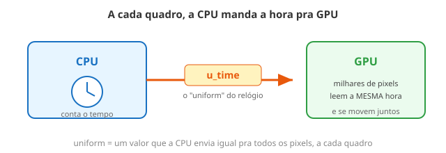

← Mapa do curso · Marco 1 · Módulo 5 de 6
Tudo que você fez até agora era uma foto: parada. Agora vem o movimento. E o segredo é ridiculamente simples: a CPU manda pra GPU, a cada quadro, um número que cresce — o tempo. Se a sua cor depende do tempo, ela muda sozinha, 60 vezes por segundo. Isso é animação.
Esse número do tempo chega numa variável que o motor já te dá pronta: u_time (em
segundos, desde que a página abriu). Ele é um uniform — uma palavra nova que vale a
pena guardar: um valor que a CPU manda igual pra todos os pixels, a cada quadro. Os sliders
que você mexeu nos módulos anteriores? Também eram uniforms.

u_time é o relógio.u_time é esse relógio. Ninguém conversa; todos veem a mesma hora.
O círculo abaixo está vivo: o raio dele cresce e encolhe sozinho, porque depende
de sin(u_time). O slider velocidade controla o ritmo. Você nem precisou
apertar "rodar" — a animação já acontece sozinha (o botão ⏸ Pausar só congela o
tempo se você quiser observar um instante).
Sem mexer ainda — preveja:
velocidade, o pulso fica mais rápido ou mais
lento?sin vai de −1 a 1. Então o raio oscila entre dois valores. Quais seriam, se a
fórmula fosse 0.25 + 0.1 * sin(...)? De ______ até ______.Agora mexa no slider e confira.
u_time? Não declarei.v_uv). É de graça,
use à vontade. Por baixo, a CPU calcula "quantos segundos se passaram" e manda pra GPU.v_uv, que muda de pixel pra pixel). Sliders, cor, tempo: tudo uniform.u_time. Se você escrever um shader que ignora o tempo, a
imagem fica parada — por mais que os quadros passem. O movimento mora na fórmula.
u_time = segundos desde que a página abriu; cresce sozinho a cada quadro.u_time.meio + amplitude * sin(u_time) oscila suavemente entre dois valores.Você chegou ao fim do Marco 1. Hora de juntar tudo: cor (M2), funções (M3), formas (M4) e agora tempo (M5). O playground abaixo é seu. Já vem um exemplo rodando — mexa, quebre, recrie. Quando gostar, clique 📷 Baixar imagem pra salvar e 📋 Copiar shader pra mandar pra um colega (é só ele colar).
Ideias pra começar (troque dentro do bloco editável):
vec3 cor = forma * vec3(sin(t)*0.5+0.5, 0.4, 1.0);vec2(0.5 + 0.3*sin(t), 0.5).max (união), cada uma pulsando em ritmo diferente.Meta: usar pelo menos 3 dos 4 ingredientes do marco (cor, função, forma, tempo).
Ligue cada termo ao seu significado (escreva a letra):
u_time A. valor que a CPU manda igual pra todos os pixelssin(u_time) C. vai-e-vem automático entre −1 e 1← Anterior: Formas e Padrões · Próximo: Por Baixo do Capô I — Paralelismo →